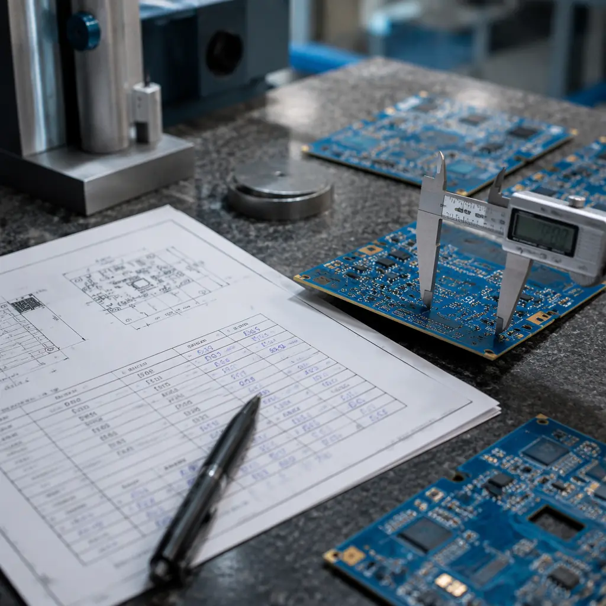

Switching PCB suppliers is one of the highest-stakes decisions a hardware company can make. Get it right, and you unlock better pricing, quality, or capacity. Get it wrong, and you face production stoppages, quality escapes, and angry end customers. Yet the average electronics OEM changes primary PCB suppliers every 3–5 years — transitions are inevitable as products evolve and supplier relationships shift.
At Huaxing PCBA, we onboard 50+ new customers annually from across 30 countries, each requiring a structured transition from their previous supplier. This guide distills that experience into a repeatable framework — whether you're moving to us, from us, or between any two PCB manufacturers. Start with a thorough supplier audit to validate your new partner before committing production volumes.

Why Companies Switch PCB Suppliers — And the Triggers That Demand It
Supplier transitions don't happen on a whim. They're triggered by concrete business events. Understanding your trigger shapes the urgency and risk profile of your migration.
Quality Deterioration
The most common trigger. Your current supplier's first-pass yield drops below 95%, field returns increase, or they fail repeated audits. When quality becomes a recurring conversation rather than an exception, it's time to explore alternatives. Our incoming quality inspection guide covers what to look for.
Cost Escalation Without Justification
Annual price increases of 3–5% are normal — but 15% hikes without material cost justification signal a supplier taking your business for granted. Run a competitive quote comparison (see our quote comparison guide) to benchmark before you start the transition conversation.
Capacity Constraints
Your product scales from 1,000 to 10,000 units per month — and your supplier can't keep up. Lead times stretch from 4 weeks to 12. This is the growth trigger: you've outgrown your partner's capacity ceiling.
Technology Gap
Your next-generation product requires 0.4mm pitch BGAs, blind vias, or HDI construction — and your current supplier maxes out at 0.5mm pitch and through-hole vias. The technology gap forces a move. Our HDI technology guide covers capability thresholds.
Geopolitical Risk Diversification
Tariff changes, export controls, and supply chain nationalism are driving companies to diversify beyond single-country sourcing. A dual-sourcing strategy distributes risk across geographies — and sometimes triggers a full transition when the balance tips.
The 5-Phase Supplier Transition Framework
Rushing a supplier transition is the number one cause of failure. Our framework requires 8–16 weeks from decision to full cutover, with built-in quality gates at each phase.
Phase 1: Supplier Qualification (Weeks 1–3)
Goal: Validate that the new supplier can manufacture your specific product to your quality standards — not just their general capability claims.
Send Your Full Technical Data Package
Don't just send Gerber files. Include: complete fabrication drawing with tolerances, IPC class requirement, impedance control notes, controlled impedance test coupon requirements, surface finish spec, solder mask color and type, silkscreen requirements, and any customer-specific requirements. Missing specs = misinterpreted requirements = failed first articles. Our Gerber files preparation guide covers the complete data package.
Request a DFM Review (Not Just a Quote)
A serious supplier returns a design for manufacturability report alongside the quote. This report should flag: annular ring violations, solder mask slivers, copper-to-edge clearance issues, and impedance feasibility. If the supplier skips DFM and jumps straight to pricing, they're likely a broker, not a manufacturer. Our DFM tips guide covers what a proper review should include.
Verify Certifications Are Current and Relevant
Ask for certificate PDFs — not just a list of logos on a website. Verify: ISO 9001 certificate number and expiry date, IATF 16949 if automotive, UL ZPMV2 file number, and IPC trainer certifications. Cross-check against the certifying body's online database. Our PCB certifications guide has the full checklist.
Phase 2: First Article Qualification (Weeks 3–6)
Goal: Produce a small batch — typically 5–25 boards — and verify they meet every specification before committing to production volumes.
Define First Article Inspection (FAI) Requirements Up Front
Specify whether you require AS9102-style FAI (aerospace standard), IPC-600 Class 2 or 3 visual inspection, microsection analysis of plated through-holes, and impedance TDR test reports. Don't assume — write it into the purchase order. Our IPC-A-600 acceptance criteria guide covers inspection standards in detail.
Conduct Functional Testing at Your Facility
Even if the supplier performs ICT and functional test, replicate testing on your side for the first article batch. Supplier test fixtures are programmed to their interpretation of your test spec — your test environment catches mismatches before they become production issues. See our PCB testing methods guide for test coverage planning.
Document Every Deviation — No Matter How Small
Silkscreen slightly offset? Hole diameter 0.05mm over spec? Document it. Small deviations on the first article often signal process capability gaps that will amplify at volume. Track findings in a deviation log and require corrective action before Phase 3.
Phase 3: Pilot Production Run (Weeks 6–9)
Goal: Scale from 25 to 200–500 units, validating that the supplier's process is stable at production volumes — not just for a hand-picked engineering sample.
The pilot run is the real test. Engineering samples can be hand-selected; pilot volumes can't. This is where you discover whether the supplier's process control is systematic or heroic — and where the NRE and tooling costs you invested start paying off.
Request Full Lot Traceability
Each PCB in the pilot should carry a date code and lot number. Request the supplier's lot traveler — the document that follows each panel through every process step (lamination, drilling, plating, etching, solder mask, surface finish, routing, electrical test). Traceability gaps on the pilot are a red flag for volume production.
Calculate Real Yield — Not "Shipped" Yield
Suppliers report yield as (good boards / boards started). You care about (functional boards / boards received). The gap between these two numbers reveals inspection effectiveness. If the supplier ships 200 out of 220 started (90.9% reported yield) but only 188 pass your functional test (85.5% real yield), that 5.4% gap needs investigation.
Phase 4: Managed Overlap — Dual Sourcing (Weeks 8–14)
Goal: Run both the old and new supplier simultaneously for 2–4 production cycles. This is your safety net — if the new supplier stumbles, the old supplier covers the gap.
This is the most expensive phase — you're paying two suppliers — but it's also the most important. Many companies skip the overlap to save cost and regret it when the new supplier hits an unexpected issue. Budget for 4–6 weeks of dual sourcing. Our dual sourcing strategy guide covers the financial model in detail.
During overlap, split volumes 30/70 (new/old) initially, then shift to 70/30 as confidence builds. Monitor three metrics: on-time delivery, first-pass yield, and field return rate. Only proceed to full cutover when the new supplier matches or exceeds the old supplier on all three for two consecutive production runs.
Phase 5: Full Cutover and Legacy Supplier Exit (Weeks 14–16)
When the new supplier has demonstrated stable performance across two overlapping production cycles, execute the cutover. This is more than just stopping POs to the old supplier — it's a formal transition with documentation.
Retrieve All Tooling and Intellectual Property
Request return of: test fixtures, programming jigs, stencils, golden boards, and all Gerber/BOM/assembly drawing files. Confirm destruction of any remaining digital files in writing. Tooling belongs to you unless your contract states otherwise.
Maintain a Bridge Inventory
Order one final production batch from the old supplier to serve as bridge inventory during the first 60 days post-cutover. If field returns spike or the new supplier has a catastrophic quality event, bridge inventory keeps your production line running while you investigate.
Conduct a Post-Transition Review
Document: what worked, what didn't, timeline vs actual, cost vs budget, quality metrics. This post-mortem becomes your playbook for the next transition — and identifies process improvements for the new supplier relationship. Share a summary with the new supplier to align on expectations going forward.
Common Pitfalls That Derail Supplier Transitions
| Pitfall | Consequence | Prevention |
|---|---|---|
| Skipping the overlap period | Production stoppage if new supplier fails | Budget 4–6 weeks dual sourcing; never do a hard cutover |
| Incomplete technical data package | Boards built to wrong spec — entire batch scrapped | Use the checklist in our Gerber files guide |
| Not verifying certifications | Regulatory non-compliance discovered at customs | Cross-check cert numbers online; our certifications guide shows how |
| Comparing quotes without DFM reports | Lowest bidder can't actually build the board | Require DFM report alongside every quote; see DFM best practices |
| No pre-shipment inspection on pilot batch | Defects found after freight and customs clearance | Our pre-shipment inspection guide covers what to check |
Summary: A Transition Is an Investment, Not a Cost
A well-executed supplier transition typically costs $3,000–$15,000 in tooling, qualification, and overlap overhead. Against the annual savings or quality improvements a better supplier delivers, this investment pays back within 6–12 months. The companies that lose money on transitions are the ones that rush them.
At Huaxing PCBA, our IATF 16949 and ISO 9001 certified facility runs structured onboarding for every new customer — including DFM review, first article qualification, and a dedicated transition engineer who owns your product through Phase 4. We also maintain bridge production capability for customers mid-transition. Learn how to audit a PCB supplier or contact our team to discuss your transition timeline.